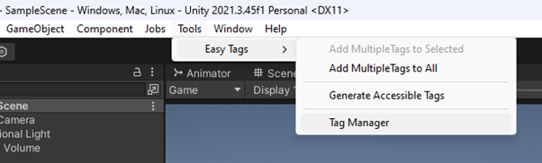
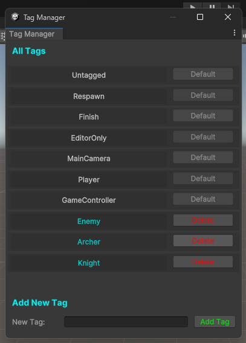
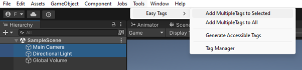
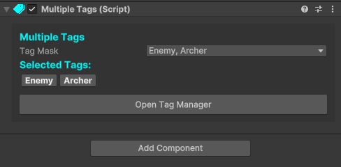
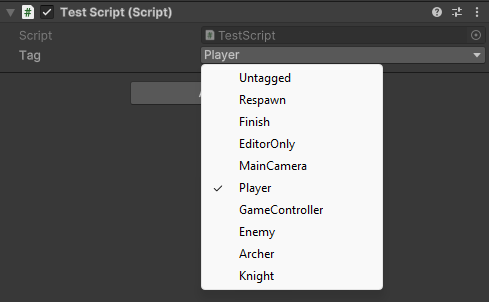
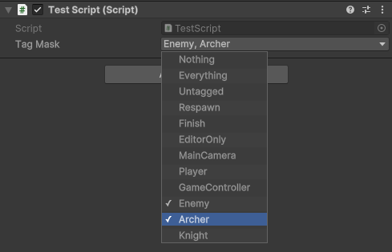

|
Easy Tags 1.0
Improved Tag System for Unity
|
|
Easy Tags 1.0
Improved Tag System for Unity
|


// Add the namespace
using UnityEngine;
using EasyTags;
// Then you can use the Tags class to directly use the defined tags
void Start()
{
GameObject gameObject = GameObject.FindGameObjectWithTag(Tags.Player);
}


// Add the namespace
using UnityEngine;
using EasyTags;
// Then you can use [Tag] attribute for tag dropdowns
[Tag] public string tag;
// And TagMask property for masks for tags
public TagMask tagMask;


// Add the namespace
using UnityEngine;
using EasyTags;
// Adding or removing tags from a mask
public TagMask tagMask;
void Start()
{
tagMask = new TagMask (new string[] {Tags.Enemy, Tags.Player});
tagMask.AddTagsToMask(new string[] {Tags.Knight, Tags.Archer});
tagMask.RemoveTagFromMask(Tags.Player);
}
// Collision handling example using MultipleTags
private void OnCollisionEnter (Collision collision)
{
// or use MatchesWith(tagMask) based on your use case
if (collision.gameObject.GetComponent<MultipleTags>().HasTags(tagMask))
{
TakeDamage(10);
}
}
// MultipleTags uses TagMask, so something like this is also possible
string[] selectedTags = gameObject.GetComponent<MultipleTags>().TagMask.GetSelectedTags();
// Although you can directly use MultipleTags for that
string[] selectedTags = gameObject.GetComponent<MultipleTags>().GetSelectedTags();
// Add the namespace
using UnityEngine;
using EasyTags;
// Prepare your TagMask either through code or in the inspector
public TagMask tagMask;
void Start()
{
// Find specifically tagged game objects that have MultipleTags attached
GameObject[] archerEnemies = TagMaskUtils.FindGameObjectsWithTags(tagMask);
// Find specifically tagged transforms that have MultipleTags attached
Transform[] archerEnemiesTransforms = TagMaskUtils.FindAllWithTags(tagMask);
}
// You can even use TagMask to search for traditionally tagged game objects
// This function finds game objects using more than one tag with TagMask
// And it works for game objects that doesn't have MultipleTags
GameObject[] allEnemies = TagMaskUtils.FindGameObjectsWithoutMultipleTags(tagMask);
// Collision handling example using TagMaskUtils
private void OnCollisionEnter(Collision collision)
{
if (TagMaskUtils.CompareGameObjectsTag(this.gameObject, collision.gameObject))
{
// Do something if two MultipleTags game objects have any matching tags
}
}
// You can also check if a list or array of GameObjects has similar MultipleTags
public GameObject[] gameObjects;
void Start()
{
if (TagMaskUtils.HasAllMatching(gameObjects))
{
// Do something if all of the GameObjects have the same tags in their MultipleTags
}
}